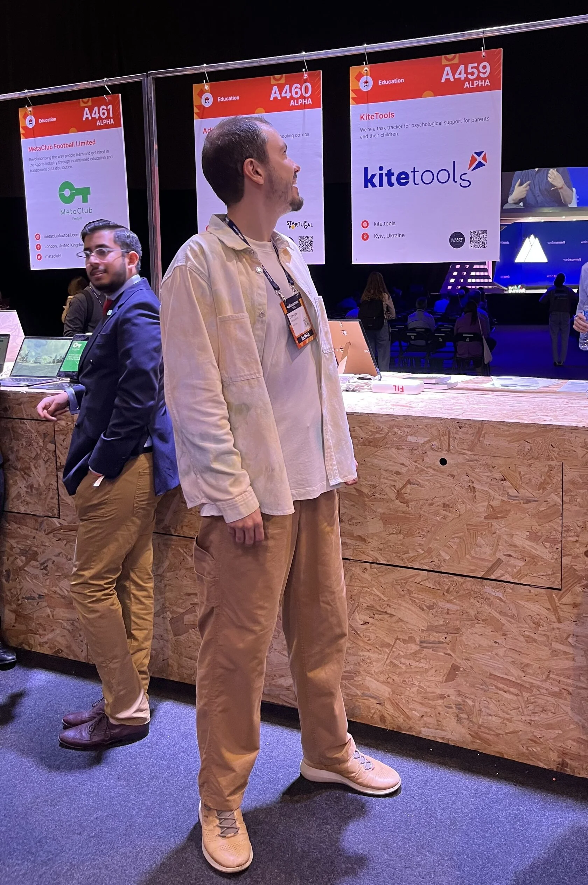

01
Системные люди
Те, кто мыслит структурами, моделями, процессами и хочет не набор техник, а цельную карту причин и следствий.
Работаю с системными людьми, которым нужна непротиворечивая система знаний и понятная методика очищения привычных реакций.
ИМТ здесь не индекс массы тела. На этом сайте ИМТ - практическая система работы с повторяющимися внутренними паттернами, ИДЕАЛ-методом, генограммой, переобучением и Personal OS.

Мой путь не начинался с желания стать консультантом. Он начался с управления, стартапов, инженерного мышления и сильного вопроса: что остается, когда внешние признаки успеха уже не дают ответа?
Я довольно быстро прошел корпоративную карьерную лестницу: успел поработать в компании примерно на 300 человек, побыть директором и на практике увидеть, как устроено управление.
Потом были стартапы - свои и чужие. Около двадцати я видел из первого ряда: как фаундер, кофаундер или один из первых сотрудников. Параллельно я занимался умными домами для очень обеспеченных людей и видел не фасад богатой жизни, а ее внутреннюю механику.
В какой-то момент стало ясно: привычная система ценностей, где надо гнаться, сравнивать, накапливать и дожимать, не ведет к тому результату, ради которого действительно хочется жить.
Так появился запрос на другую систему ценностей - не красивую идею, а непротиворечивую онтологию, которую можно проверять жизнью.
Ответ на этот запрос я получил около восьми лет назад. Но как инженер и научный скептик я не принял его на веру: примерно пять лет стресс-тестил систему, искал слабые места, логические разрывы и практические противоречия. Именно из этого выросла моя работа с ИМТ.

На консультацию обычно приходят люди, которым мало советов уровня "просто отдохни", "больше дисциплины" или "поверь в себя". Им нужна причинно-следственная модель и следующий практический шаг.
Те, кто мыслит структурами, моделями, процессами и хочет не набор техник, а цельную карту причин и следствий.
Люди с высокой ценой решений, сильным интеллектом и привычкой все анализировать, у которых автоматические реакции все равно берут руль.
Когда базовые цели достигнуты, внешнего успеха достаточно, а внутри поднимается вопрос о другой системе ценностей и новых целях.
Консультация дает понимание, различение и шаг переобучения. Практика, выбор и закрепление остаются зоной ответственности человека.
Не абстрактную проблему, а конкретный сценарий: где снова включается знакомая реакция, что ее запускает и чем она заканчивается.
Смотрим, что реально произошло, какой смысл система мгновенно присвоила событию и какая привычная защита включилась.
Находим повторяемую причинно-следственную связь: почему именно эта реакция кажется единственно правильной, даже если головой уже понятно иначе.
Формулируем более точное понимание, которое можно удерживать в похожих ситуациях, и первый шаг переобучения без насилия над собой.
Переводим вывод в наблюдения, вопросы, короткие действия и при желании в личную систему: документы, AI-ассистента, карту паттернов.
Я выбрал кейсы, которые показывают разные типы повторяемости: внешняя оценка, подавление живого импульса и превращение жизни в систему "на потом".
Про рабочий фидбек, 360 и чужие выпады, которые начинают звучать как доказательство собственной ценности или несостоятельности.
Открыть кейсПро сильный импульс, который почти сразу попадает под внутренний совет директоров из страха, расчетов и требований гарантий.
Открыть кейсПро умные папки, закладки, AI-инструменты и ситуацию, где система растет быстрее, чем реальное действие.
Открыть кейсФорматы оставлены такими же, как в текущей записи на консультации. Если не понятно, с чего начать, обычно достаточно одной встречи, чтобы увидеть паттерн и понять следующий шаг.
Подходит, чтобы разобрать один повторяющийся сценарий и получить ясный следующий шаг.
Короткий цикл для одного узла: увидеть механику, протестировать новое понимание, закрепить практику.
Ритм примерно два раза в месяц для спокойного ведения нескольких связанных паттернов.
Еженедельная работа для тех, кто хочет держать переобучение и Personal OS в постоянном контуре.
На консультации мы формулируем паттерн и следующий шаг. Дальше опору можно держать в базе знаний, учебных траекториях, Personal OS и каталоге анонимизированных кейсов.
Мне важно, чтобы страница не обещала лишнего. Консультация - это работа с пониманием, паттерном и практикой, а не замена терапии или попытка решить жизнь за человека.
Нет. Это консультационный формат. Он не заменяет медицинскую, психотерапевтическую, юридическую или финансовую помощь.
Нет. Подход лучше работает с людьми, которым важно проверять модель, задавать вопросы и видеть практическую причинность.
С повторяющейся реакцией, внутренним конфликтом, рабочим или личным сценарием, который уже понятен головой, но снова воспроизводится.
Напишите, что повторяется, где это проявляется и какой вопрос вы хотите разобрать. Я отвечу, какой формат будет уместен.